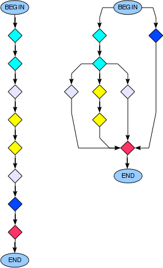

Back in the old days of programming, the days we used to have blocking function calls, things were easy: first do this, and then do that, and finally clean things up. While this sequential style of programming has its own advantages in terms of human perception, it imposes certain concurrency related limitations. That is, each expression in a program is supposed to wait for the completion of the execution flow up until the line above, regardless of if it has anything to do with the current expression or not. Asynchronious programs are known to solve this problem of concurrency, (at least, to some extent) with the cost of sacrificing the sequential program flow. At its most basic form, functions are provided interfaces to specify dependencies between each other and hence, independent functions are allowed to execute concurrently. These interfaces are generally provided in the form of callback functions, that is, when f() gets completed do g(), and when g() completes do h(), and so on. The premise of this blog post is to investigate whether it is possible to still preserve the dependency between functions by still allowing the programmer to syntatically structure the program sequentially.

In the context of asynchronious programming, JavaScript is an exceptional example, where almost every functionality in the language is shaped according to asynchronous callbacks, which eventually enforces you to program in a totally top-down callback-oriented style. In this post, I prefered to use CoffeeScript (which is a programming language compiled to JavaScript) to enhance the plain text the explanations.
Ok, enough talk. Let’s start with working on a small sequential program snippet.
try
conn = db.open "local"
rows = conn.query "SELECT key, val FROM entries"
conn.close()
user.send result: rows
catch err
user.send error: errSimple and intuitive. You just grab the logic behind at first sight: First, connect to the database, and then query the rows of a table, and finally close the connection and return the results. And as a bonus you can catch errors that would occur during this sequence. Here is its asynchronious, callback-driven counterpart:
# Erronous try-catch block. (db.open might have been completed and the
# catch block would be passed over.)
try
db.open "local", (conn) ->
conn.query "SELECT key, val FROM entries", (rows) ->
conn.close()
user.send result: rows
catch err
util.log err
user.send error: errUm… Not as intiutive as its sequential counterpart. And the nested callback chains expands the code to the right, which makes it harder to understand as well. But, not that bad… with a serious glitch: Orphan exceptions. That is, for instance, who is supposed to catch a connection error exception after db.open completes gracefully and the execution passes over the try-catch block? While code will be get polluted a little bit, this problem can be tackled by returning an error, instead of raising an exception.
db.open "local", (err, conn) ->
return user.send error: "connection error: #{err}" if err?
conn.query "SELECT key, val FROM entries", (err, rows) ->
conn.close()
return user.send error: "query error: #{err}" if err?
user.send result: rowsBetter now, at least in terms of correctness.
So far, we always beforehand knew the callbacks that will be nested into each other. That is, we knew that a simple query will follow just after the database connection gets established. What if we wouldn’t? What if the next callback is to be dynamically determined according to a runtime variable? Think about this scenario: You need to query the database multiple times depending on the input passed by the user. A pretty common day-to-day practice. Terrorizing the code with unknown number of nested callbacks would buy us no credits.
ids = [...] # The user provided input.
totalRows = []
db.open "local", (err, conn) ->
return user.send error: "connection error: #{err}" if err?
id = ids.pop()
return conn.close() unless id?
conn.query "SELECT key, val FROM entries WHERE id = #{id}", (err, rows) ->
if err?
conn.close()
return user.send error: "query error: #{err}"
totalRows += rows
id = ids.pop()
return conn.close() unless id?
conn.query "SELECT key, val FROM entries WHERE id = #{id}", (err, rows) ->
if err?
conn.close()
return user.send error: "query error: #{err}"
totalRows += rows
id = ids.pop()
return conn.close() unless id?
conn.query "SELECT key, val FROM entries WHERE id = #{id}", (err, rows) ->
if err?
conn.close()
return user.send error: "query error: #{err}"
totalRows += rows
# ...On the other hand, forming nested callbacks using a recursive function solves the problem.
ids = [...] # The user provided input.
db.open "local", (err, conn) ->
return user.send error: "connection error: #{err}" if err?
f = (accum) ->
id = ids.pop()
if not id?
conn.close()
return accum
conn.query "SELECT key, val FROM entries WHERE id = #{id}", (err, rows) ->
if err?
conn.close()
return user.send error: "query error: #{err}"
f accum + rows
f []I admit that this is not intuitive, also more error-prone. (I also could not be sure if I wrote it right. But anyway, you get the idea.) There must be some other way. Wouldn’t it be cute if there would exist some sort of sequencer mechanism that allows me to sequentially chain my nested callbacks?
This Aha! moment helped me to come up with below tiny helper class.
class SequentialExecutor
tasks: []
pos: 0
add: (task) => @tasks.push => task => @run()
run: => @tasks[@pos++]()SequentialExecutor helps you to push your functions into an array and executes them in order for you. Specifically, it passes you the pointer to the next function (i.e., next) that is supposed to be executed after current function. So, it is up to you to execute it or not. Here is an example using this cute SequentialExecutor class:
exec = new SequentialExecutor()
exec.add (next) ->
db.open "local", (err, conn) ->
return user.send error: "connection error: #{err}" if err?
exec.conn = conn
next()
exec.add (next) ->
exec.conn.query "SELECT key, val FROM entries", (err, rows) ->
return user.send error: "query error: #{err}" if err?
user.send result: rows
next()
exec.add (next) ->
exec.conn.close()
exec.run()Yes, now we have something! Let’s also try to implement the case where the total number of queries are dynamically determined on the run.
exec = new SequentialExecutor()
exec.add (next) ->
db.open "local", (err, conn) ->
return user.send error: "connection error: #{err}" if err?
exec.conn = conn
next()
exec.add (next) ->
exec.conn.query "SELECT key, val FROM entries", (err, rows) ->
return user.send error: "query error: #{err}" if err?
# Errounous dynamic task creation. exec.conn.close() will be evaluated
# earlier then the insert tasks created within this task.
for row in rows
exec.add (next) ->
exec.conn.insert key: row.key, val: row.val * 2, (err) ->
return user.send error: "insert error: #{err}" if err?
next()
exec.add (next) ->
user.send
next()
next()
exec.add (next) ->
exec.conn.close()
exec.run()
###
Step | Command
-----+------------------
1 | db.open
2 | exec.conn.query
3 | exec.conn.close (BOOM!)
4 | exec.conn.insert
5 | exec.conn.insert
...
n-1 | exec.conn.insert
n | user_send
###Oops! That is not what we were expecting. Database connection is supposed to be closed at the end of the execution flow. Hrm… Can’t we enhance SequentialExecutor to label tasks with priorities? Here is the poor man’s sequential executor with priority support.
Heap = require("heap")
class SequentialExecutor
tasks: new Heap((u, v) -> u.rank - v.rank)
add: (rank, task) => @tasks.push rank: rank, task: => task => @run()
run: => @tasks.pop()?.task()Let’s give our new gear, PrioritizedSequentialExecutor, a try.
exec = new PrioritizedSequentialExecutor()
exec.add 0, (next) ->
db.open "local", (err, conn) ->
return user.send error: "connection error: #{err}" if err?
exec.conn = conn
next()
exec.add 1, (next) ->
exec.conn.query "SELECT key, val FROM entries", (err, rows) ->
return user.send error: "query error: #{err}" if err?
# Errounous dynamic task creation. exec.conn.close() will be evaluated
# earlier then the insert tasks created within this task.
for row in rows
exec.add 2, (next) ->
exec.conn.insert key: row.key, val: row.val * 2, (err) ->
return user.send error: "insert error: #{err}" if err?
next()
exec.add 4, (next) ->
user_send
next()
next()
exec.add 3, (next) ->
exec.conn.close()
exec.run()
###
Step | Command | Priority
-----+------------------+---------
1 | db.open | 0
2 | exec.conn.query | 1
3 | exec.conn.insert | 2
4 | exec.conn.insert | 2
...
n-2 | exec.conn.insert | 2
n-1 | exec.conn.close | 3
n | user_send | 4
###Mission accomplished! Now we have a fully-fledged sequencer where we can dynamically push tasks with different priorities.
Note that while PrioritizedSequentialExecutor is quite good at doing what it is advertised for, especially compared to the lines of code written, there exists other libraries (e.g., seq, chainsaw, futures, async, windjs, streamlinejs, etc.) with similar flow-control purposes. While you are at it, you might want to check them out too.